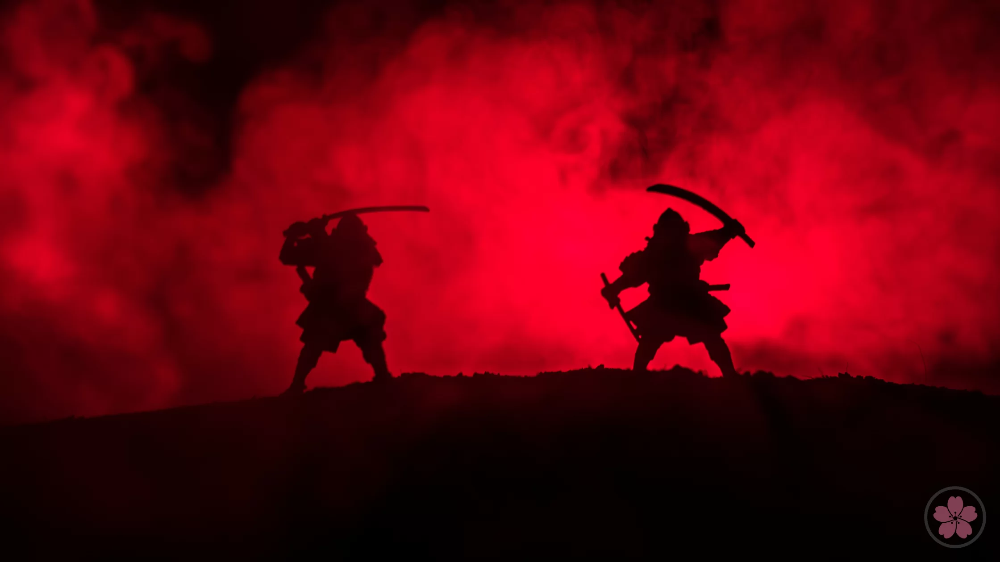
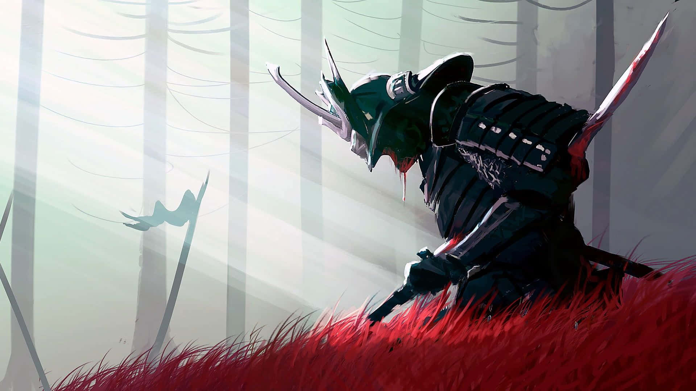
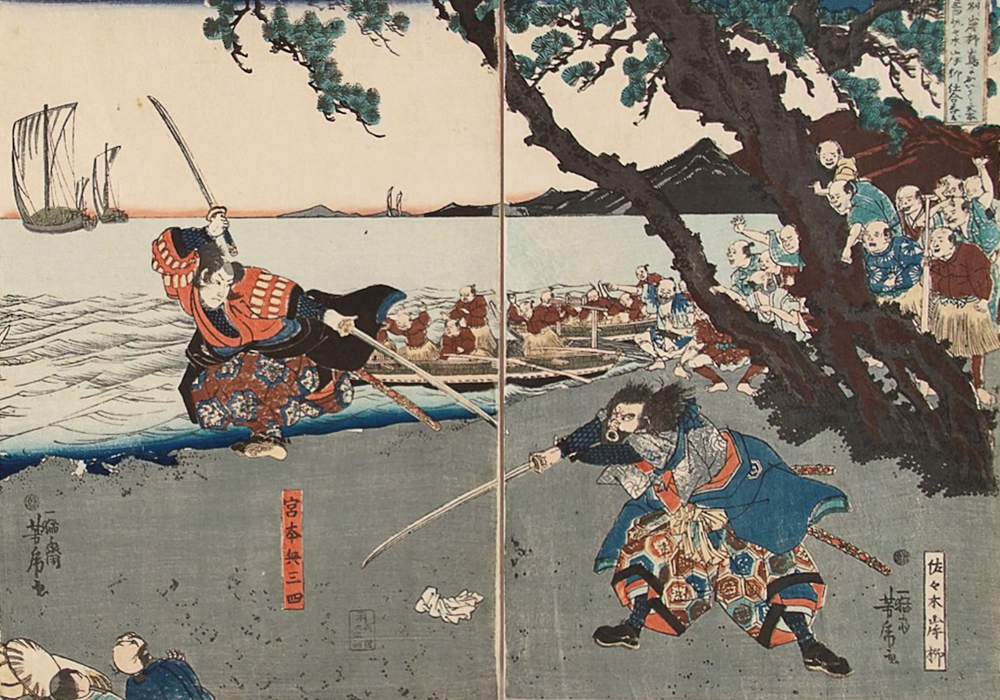

O Samurai

Ser um Samurai era, acima de tudo, aceitar um destino de
entrega total. No centro do Japão feudal, esses guerreiros não
eram apenas combatentes de elite, mas os guardiões de
uma ordem social e espiritual que exigia a perfeição em cada
gesto. A vida de um samurai era pautada por uma dualidade fascinante:
a mão que manejava a espada com precisão letal era a mesma que,
com extrema delicadeza, traçava ideogramas em papel de arroz ou
servia o chá em silêncio absoluto.
A Forja do Caráter

Diferente dos cavaleiros ocidentais, a força do samurai
não residia apenas em sua armadura de lamelas de ferro
e seda, mas em sua psique . Desde a infância, o
treinamento transcendia o manejo da Katana
ou do arco (Yumi) . Eles eram ensinados a dominar o medo
através da meditação e a enxergar a morte não como um
fim, mas como uma companheira constante que dava sabor e
urgência à vida.
O Guerreiro Intelectual: O ideal do Bunbu Ryodo (A Pena e a Espada em harmonia)
ditava que um guerreiro sem cultura era um bruto, enquanto um erudito sem coragem era inútil.
A Estética do Sacrifício: Para o samurai, a beleza estava na queda da
flor de cerejeira — que morre no auge de seu esplendor, sem murchar no galho. Assim
deveria ser a vida do guerreiro: intensa, honrada e pronta para o sacrifício final pelo
seu senhor ou pelos seus ideais.
O Legado de Aço

Embora as eras tenham mudado e as espadas tenham sido
guardadas em museus, a essência do samurai permanece
como um arquétipo de resistência. Eles nos ensinaram
que a verdadeira maestria não é sobre derrotar o outro,
mas sobre a vitória sobre si mesmo (Katsu Jin Ken). O
samurai moderno não veste armadura, mas carrega o mesmo
compromisso com a excelência, a lealdade e a integridade
em todas as esferas da vida.
"O caminho do samurai é encontrado na morte,
mas sua vida é imortalizada na honra que deixa para trás."